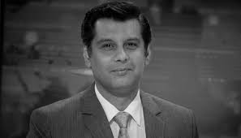

The Voice Of Truth
Arshad Sharif was an investigative journalist, writer, and news anchor for Pakistan’s national and international news organizations, including the United Kingdom, who specialized in political events. The President of Pakistan, Arif Alvi, awarded him the Pride of Performance in journalism on March 23, 2019, in recognition of his achievements. Sharif was murdered in Kenya on October 23, 2022. He was the anchor of the program Power Play on ARY News prior to joining Aaj News, where he was the director of news. Dunya News employed him as the host of Kyun.
One of Pakistan’s most well-known journalists was Arshad Sharif. The public respected him greatly for his straightforward and fearless approach to journalism.
